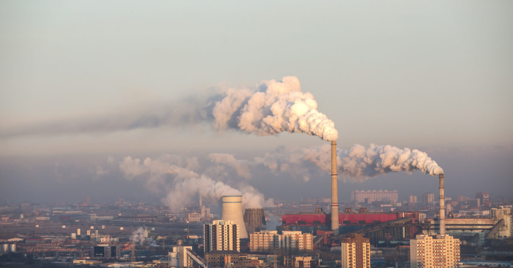
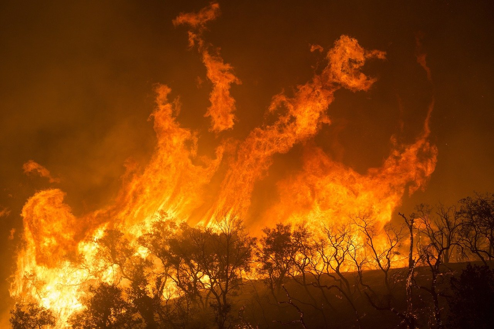

What is climate?
Climate is the long-term pattern of weather in a particular area. Weather can change from hour to hour, day to day, month to month or even from year to year. For periods of 30 years or more, however, distinct weather patterns occur. A desert might experience a rainy week, but over the long term, the region receives very little rainfall. It has a dry climate. Because climates are mostly constant, living things can adapt to them. Polar bears have adapted to stay warm in polar climates, while cacti have evolved to hold onto water in dry climates. The enormous variety of life on Earth results in large part from the variety of climates that exist. Climates do change, however they just change very slowly, over hundreds or even thousands of years. As climates change, organisms that live in the area must adapt, relocate, or risk going extinct.
Earth’s Changing Climate
Earth’s climate has changed many times. For example, fossils from the Cretaceous period (144 to 65 million years ago) show that Earth was much warmer than it is today. Fossilized plants and animals that normally live in warm environments have been found at much higher latitudes than they could survive at today. For instance, breadfruit trees, now found on tropical islands, grew as far north as Greenland. Earth has also experienced several major ice ages—at least four in the past 500,000 years. During these periods, Earth’s temperature decreased, causing an expansion of ice sheets and glaciers. The most recent Ice Age began about 2 million years ago and peaked about 20,000 years ago. The ice caps began retreating 18,000 years ago. They have not disappeared completely, however. Their presence in Antarctica and Greenland suggests the Earth is still in a sort of ice age. Many centuries from now, the glaciers may advance again.Climatologists look for evidence of past climate change in many different places. Like clumsy criminals, glaciers leave many clues behind them. They scratch and scour rocks as they move. They deposit sediment known as glacial till. This sediment sometimes forms mounds or ridges called moraines. Glaciers also form elongated oval hills known as drumlins. All of these geographic features on land that currently has no glaciers suggest that glaciers were once there. Scientists also have chemical evidence of ice ages from sediments and sedimentary rocks. Some rocks only form from glacial material. Their presence under the ocean or on land also tells scientists that glaciers were once present in these areas. Climate changes occur over shorter periods, as well. For example, the so-called Little Ice Age lasted only a few hundred years, peaking during the 16th and 17th centuries. During this time, average global temperatures were 1 to 1.5 degrees Celsius (2-3 degrees Fahrenheit) cooler than they are today. One way scientists have learned about the Little Ice Age is by studying the rings of trees that are more than 300 years old. The thickness of tree rings is related to the amount of the trees’ annual growth. Some climate changes are almost predictable. One example of regular climate change results from the warming of the surface waters of the tropical eastern Pacific Ocean. This warming is called El Niño—The Child—because it tends to begin around Christmas. In normal years, trade winds blow steadily across the ocean from east to west, dragging warm surface water along in the same direction. This produces a shallow layer of warm water in the eastern Pacific and a buildup of warm water in the west. Every few years, normal winds falter and ocean currents reverse. This is El Niño. Warm water deepens in the eastern Pacific. This, in turn, produces dramatic climate changes. Rain decreases in Australia and southern Asia, and freak storms may pound Pacific islands and the west coast of the Americas. Within a year or two, El Niño ends, and climate systems return to normal.
 
Natural Causes of Climate Change
Climate changes happen for a variety of reasons. Some of these reasons have to do with Earth’s atmosphere. The climate change brought by El Niño, which relies on winds and ocean currents, is an example of natural atmospheric changes. Natural climate change can also be affected by forces outside Earth’s atmosphere. For instance, the 100,000-year cycles of ice ages are probably related to changes in the tilt of Earth’s axis and the shape of its orbit around the sun. Those planetary factors change slowly over time and affect how much of the sun’s energy reaches different parts of the world in different seasons. Plate tectonics also play a role in climate changes. Earth’s continental plates have moved a great deal over time. More than 200 million years ago, the continents were merged together as one giant landmass called Pangaea. As the continents broke apart and moved, their positions on Earth changed, and so did the movements of ocean currents. Both of these changes had effects on climate. Changes in greenhouse gases in the atmosphere also have an impact on climate change. Gases like carbon dioxide trap the sun’s heat in Earth’s atmosphere, causing temperatures on the surface to rise. Volcanoes—both on land and under the ocean—release greenhouse gases, so if the eruption only reaches the troposphere the additional gases contribute to warming. However, if the eruption is powerful enough to reach the stratosphere particles reflect sunlight back into space causing periods of cooling regionally.
Human Causes of Climate Change
Some human activities release greenhouse gases—burning fossil fuels for transportation and electricity, or using technology">agricultural technology that increases meat production, for instance. Trees absorb carbon dioxide, so cutting down forests for timber or development contributes to the greenhouse effect. So do factories that emit pollutants into the atmosphere. Many scientists are worried that these activities are causing dramatic and dangerous changes in Earth’s climate. Average temperatures around the world have risen since about 1880, when scientists began tracking them. The seven warmest years of the 20th century occurred in the 1990s. This warming trend may be a sign that the greenhouse effect is increasing because of human activity. This climate change is often referred to as “global warming.” Global warming is often linked to the burning of fossil fuels—coal, oil, and natural gas—by industries and cars. Warming is also linked to the destruction of tropical forests. The University of California Riverside and NASA estimate human activity has increased the amount of carbon dioxide in the atmosphere by about 30 percent in the past 150 years. Chlorofluorocarbon (CFC), hydrochlorofluorocarbon (HCFC), and hydrofluorocarbon (HFC) chemicals are used in refrigeration and aerosol sprays. These chemicals are also greenhouse gases. Many countries are working to phase out their use, and some have laws to prevent companies from manufacturing them.If you want to know about solution click here
References
Author name:National Geographic Society
Source title:www.nationalgeographic.org
https://www.nationalgeographic.org/article/earths-changing-climate/Author name:Los Angeles County Department of Public Health
Source title:www.publichealth.lacounty.gov
http://www.publichealth.lacounty.gov/eh/docs/climatechange/ThingYouCanDotoReduceClimateChange.pdf